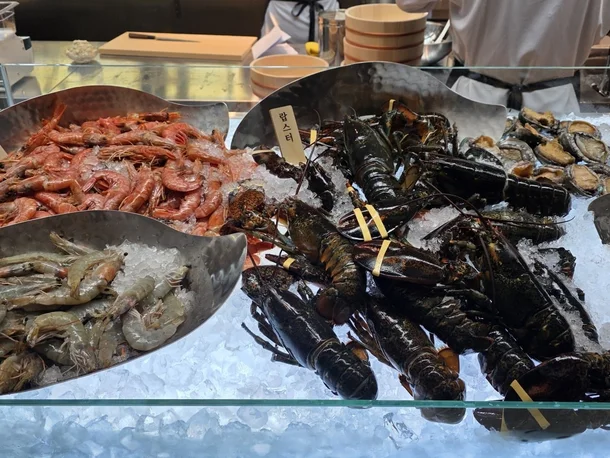
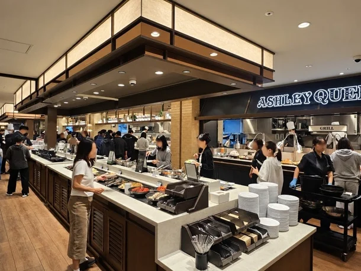

"4인 가족 모임에 100만원"…연말 앞두고 초고가 뷔페 '불티' [권용훈의 트렌드워치] : 네이트 뉴스


연말을 앞두고 뷔페 시장의 가격 양극화가 뚜렷해지고 있다.
서울 주요 특급호텔은 크리스마스와 송년회 수요를 겨냥해 저녁 뷔페 가격을 1인당 최고 23만 원대로 올렸다.
호텔보다 비싼 초고가 뷔페도 연말 주말 예약이 대부분 마감될 정도로 인기를 끌고 있다.
반면 2만원 안팎의 가성비 뷔페는 가격을 낮추거나 동결하며 고객 확보에 나서고 있다.
이거보고 과자뷔페 사업하기로 했다